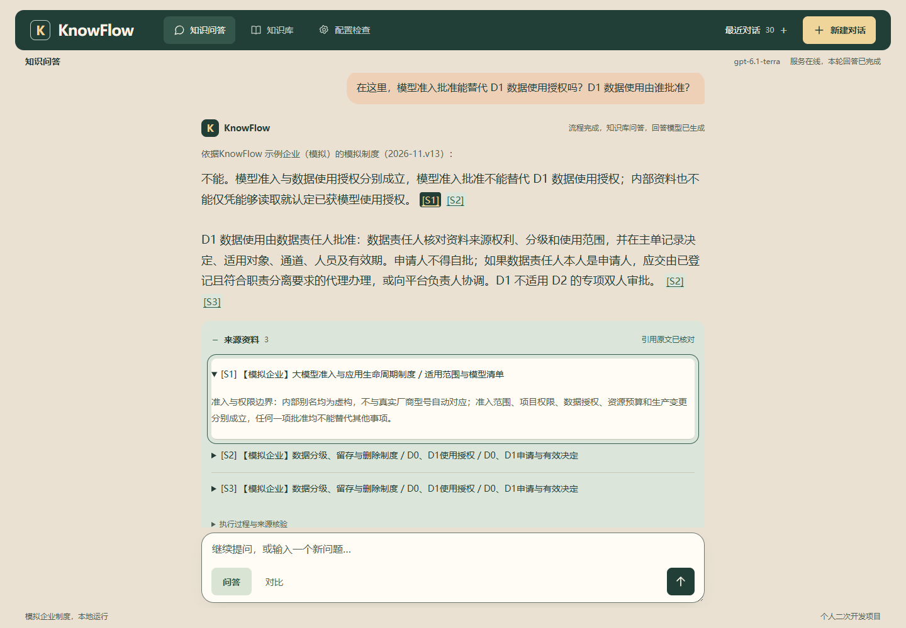
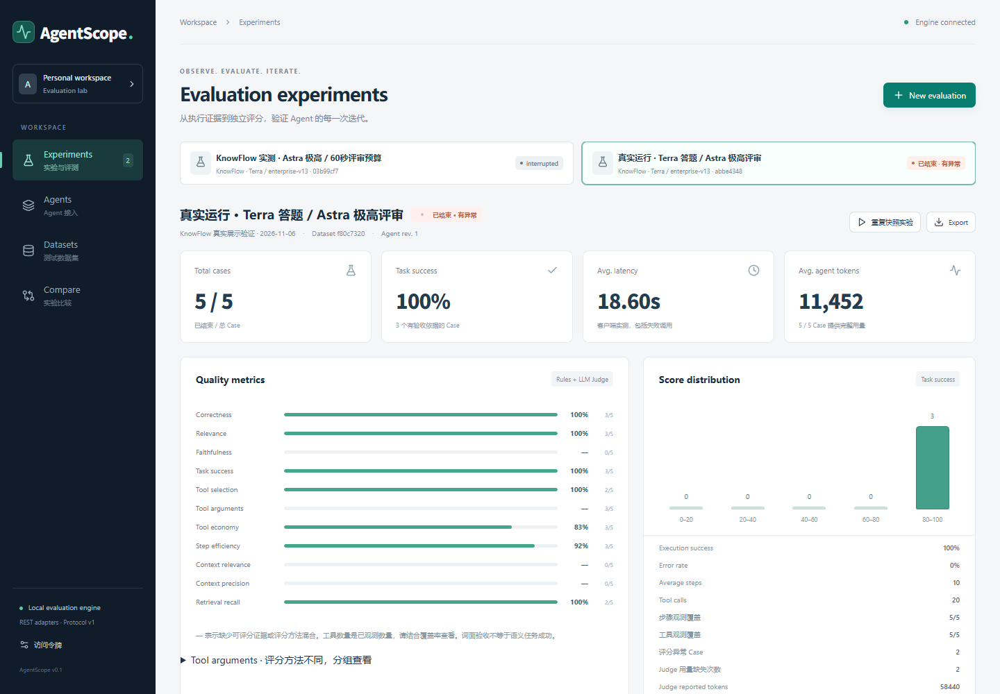

第一问 · 制度检索
模型准入批准能替代 D1 数据使用授权吗？D1 数据使用由谁批准？
两种授权分别成立。数据责任人核对资料来源、分级和使用范围，申请人不得自批。引用可分别回到模型准入和数据授权制度。
01 / 演示案例
同一个会话先查询规则，再追问上一周提交的申请。两问需要的证据不同。
第一问 · 制度检索
两种授权分别成立。数据责任人核对资料来源、分级和使用范围，申请人不得自批。引用可分别回到模型准入和数据授权制度。
追问 · 实际状态
缺少这笔申请的实际审批记录，当前无法确认。刷新后可以继续查看两轮回答和来源。

02 / 技术实现
LangGraph 判断请求需要知识检索、工具还是实际记录。演示的首问走下面这条知识问答路径。
基于开源检索底座二次开发，在 AI 辅助下完成制度资料接入、证据传递和工具路由。修复工具正文在观测记录中被截断的问题，使评测能按同一次执行核对工具回执。用 FastAPI、SSE 和 SQLite 完成多轮问答、引用定位和会话恢复。
03 / 评测记录
一轮真实评测使用 5 个公开自拟案例。独立模型评审完成 3 题，另外 2 题超时。完整独立质量与性能验收仍有未完成项。
